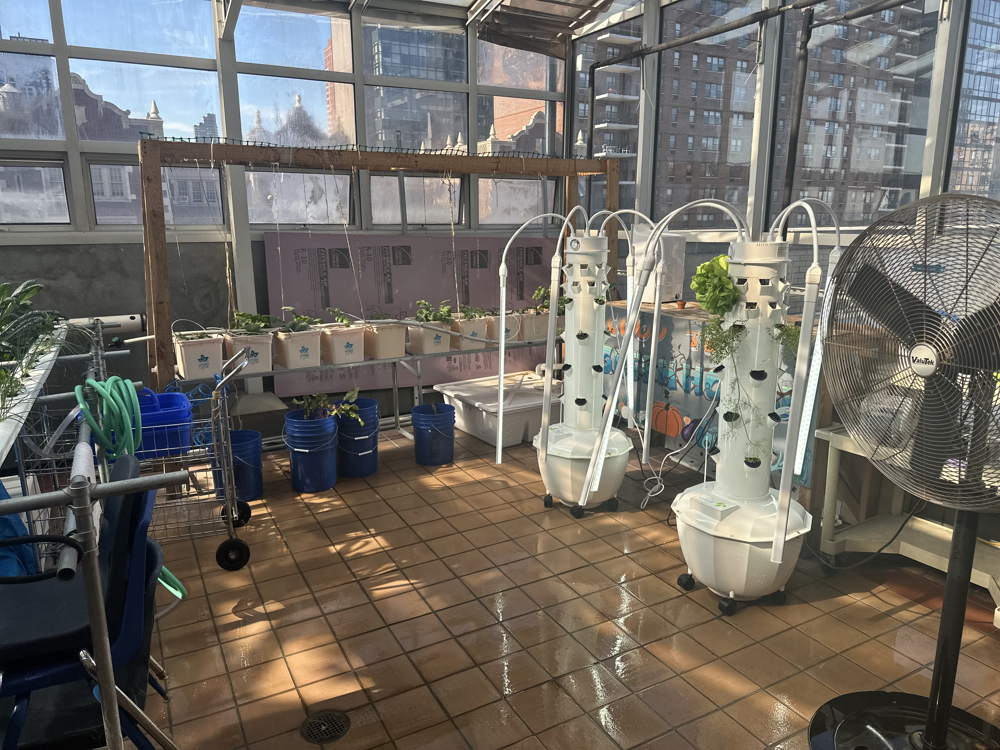

Hello everyone my name is
I am 19 years old and I was born on April 22, 2003. Yup! You guessed it. My birthday falls on Earth Day! I like to play Xbox games with my friends such as Ark, Minecraft, Grounded, Rocket League, etc.
When it comes to my favorite dish to eat I am conflicted. Because I'm a mac and cheese w/ curry chicken guy alllllllllllllllllllll the way. But then I see spaghetti and go crazy. I love me some Hagen-Daz Caramel Cone and my favorite fast food restaurant would have to be Chipotle. But between me and you I'm really a pizza guy.

Now as for my school/secular life I am currently enrolled in Coop-tech which is a trade school. I am going for Electrical Installation. I hope to be a Master Electrician. There's something about this profession that calls to me. Just like how the ocean called to Moana(for all those Disney fans out there). Just learning the basic circuits and how to install them and how to prevent hurting yourself and others really makes me feel like I will be able to give back to society. Especially when I'm furnishing my own house. I hope to be able to work underneath a licensed Electrician so that I would soon(in about 5 years) also be able to get my certification.
But in the meantime I also took up a program called Change Food For Good. It's about hydroponics. Growing your own food and creating your own system to help you do just that. I figured why be a one-trick pony when I could put some more tools in my toolbox. It seems to be very intresting and down to earth. See what I did there. Down to ear.... nevermind lol. I hope that with all the hard work I am putting in I will be able to get something good in return.
